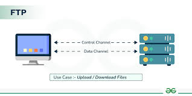

File Transfer Protocol (FTP) is an application-layer protocol that is used to transfer files between a client and a server over a TCP/IP network. It provides a standardized method for file exchange across different systems.It uses separate connections for commands.
FTP is a connection-oriented file transfer protocol that operates over TCP and supports reliable data transmission.It uses TCP as its transport layer protocol, establishes separate control and data connections, suitable for general-purpose file transfer over networks and provides authentication-based access control.
it has 4 types of transmission modes which are: ASCII mode - plain text ,EBCDIC - systems on EBCDIC encoding , image - transfer binary data without modification and local - transferring files that contain data stored in logical bytes of specified length.
